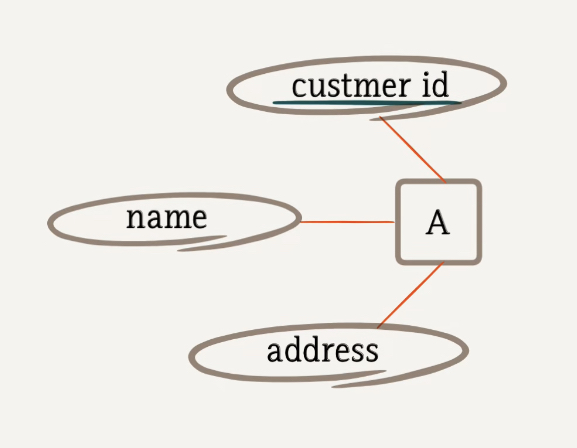
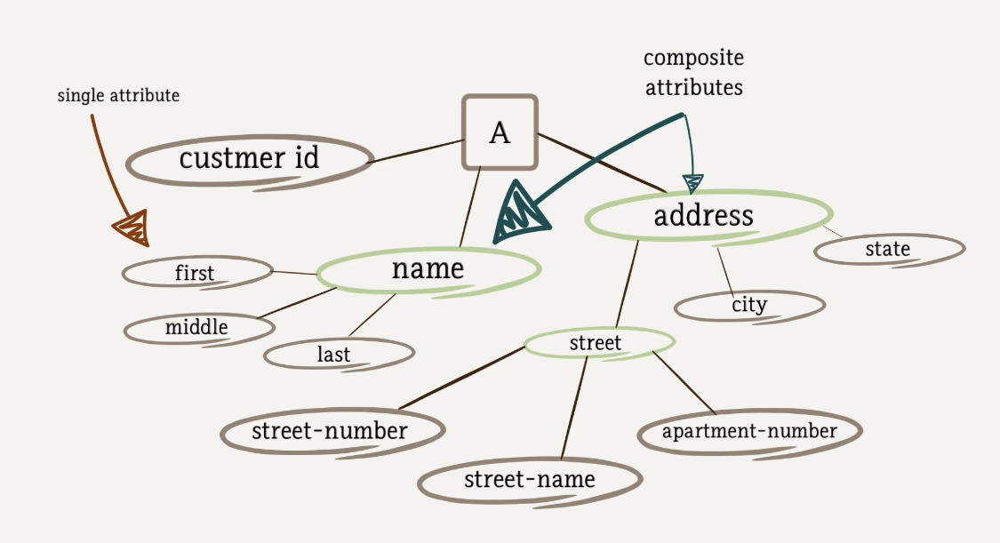
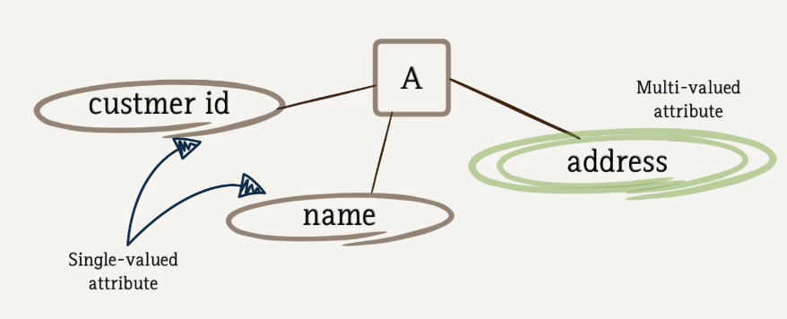
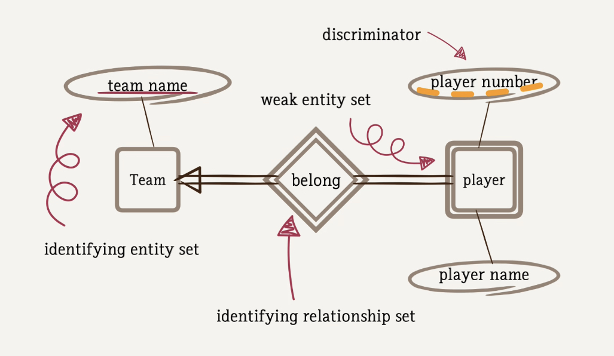
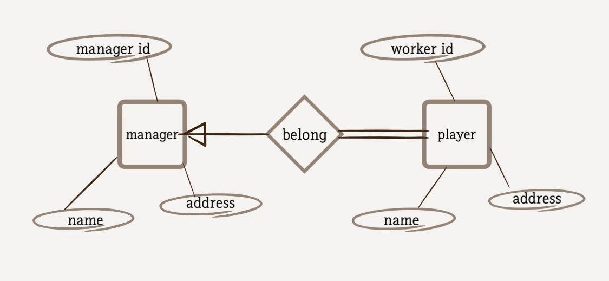
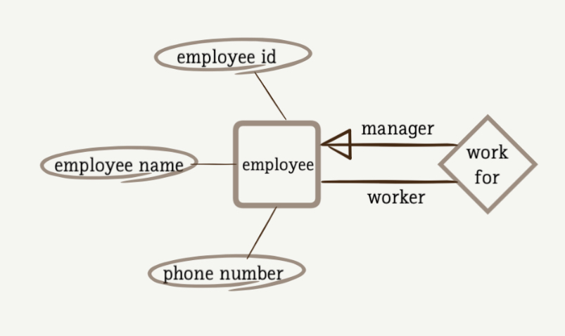

ER Diagram
1. Entity and Entity set
- Entity - an object that exists and is distinguishable from other object;
customer,account,department - Entities have Attributes - people have
namesandaddress
Entity set - A set of entities of the same type that share the same properties (or attributes);
set of $$\forall$$ customers all saving accounts all departments in the company
In ER diagram
Rectangle- entity setsEllipses- attributesLinebetween a rectangle and ellipse - link between an attribute and an entity set
2. Relationship and Relationship set
- A
Relationshipis an association among entities - i.e. the relationship between the customers and the accounts
- A
Relationship setis a set of relationships of the same type
In ER diagram
Diamond- a set of relationship
3. Constraints
- Mapping cardinalities
- Concerns the number of entities to which another entity can be associated via a relationship set
- i.e. For each customer, how many accounts he/she can have? One or more than one?
- Participation constraints
- Concerns whether all entities in the entity set have to participate in the relationship set
- i.e. whether a customer must have an account record, or there can be some customers without any accounts?
In ER diagram
Directed line (→), signifying one or Anundirected line (-), signifying many, between the relationship set and entity setDouble line (=)indicates Total participation : Every Entity in the entity set participates at least one relationship In the relationship set- Single line(-) indicates Partial participation : Some entity may not participate in any relationship in the relationship set


Practical Issues : As a professional DB designer, we have to be able to
- Understand and model the data of an application using a ER diagram
- Interact with the client to work out a clear problem definition
- Realize the missing information and ask your client for clarification
- Provide professional suggestions to better design the database for the specific application
To Recap
Entity and entity set, Entities have Attributes
Relationship and relationship set
In the ER diagram:
rectangle - entity sets
ellipses - attributes
line - link between an attribute and an entity set
Mapping cardinalities - many one
concerns the number of entities to which another entity can be associated via a relationship set
Participation constraints full partial
concerns whether $$\forall$$ entities in the entity set have to participate in the relationship set
4. Keys
Super key
Super key of an entity set is a set of one or more attributes whose values uniquely determine each entity
No two entities have exactly the same values in super key
In this example, each A (customer) has his/her unique customer_id, then
{customer_id, name} is a super key
{customer_id, address} is another super key
{customer_id, name, address} is also a super key
Candidate key
Candidate key of an entity set is a minimal super key
Every relation will have at least one candidate key.
Minimal - no redundant attributes, i.e., no subset of a candidate key is still a key
Although followings are super keys:
{customer_id, name}, {customer_id, address}, {customer_id, name, address}
Only the customer_id is a candidate key because it's minimal
Primary Key
Primary key is a selected candidate key, when there are several candidate keys present
In ER diagram
Underlinethe attribute (Ellipses)

More on ER Diagram
1. Different attribute types
- Single vs Composite attributes
 - Single-valued vs Multi-valued attributes
Double ellipsesis used to represent multi-valued attributes

→ Here,agecan be derived from thedate of birth, we treatageas a derived attribute
2. Weak entity set
- An entity set that does not have a primary key is referred to as a weak entity set
- The existence of a weak entity set depends on the existence of an identifying entity set
- The weak entity set must relate to its identifying entity set via a total, many-to-one identifying relationship set from the weak entity set to the identifying entity set.
- weak entity set에는 primary key가 없지만 해당 entity set 내에서 식별 가능한
discriminator(partial key)가 존재한다 - Primary key를 갖고 있지 않은 entity set을 말한다
In ER diagram
Double rectangleis representing weak entity set- The existence of a weak entity set depends on the existence of an identifying entity set
- The existence of a weak entity set depends on the existence of an identifying entity set
Double diamondrepresents the identifying relationship setDashed lineto represent a discriminator (partial key) of a weak entity set is a set of attributes that distinguish among the weak entities that depend on the same identifying entity- The primary key of a weak entity set is formed by the primary key of the identifying entity set plus the weak entity set’s discriminator.
- Example:
예를 들어 오른쪽의 section entity set에는
밑줄친 attribute, 즉 primary key가 존재하지 않는다. 이 때 entity set 내에점선 밑줄로 된 attribute들이 이 entity set의 discriminator이다.
따라서 weak entity set에서는 연결된 entity set의 primary key와 discriminator를 합하여 primary key로 사용한다.
위 diagram에서 section의 primary key는 {team_name,player_number}가 되는 것.
※ 두 줄로 된 diamond 형태는 identifying relationship을 나타내며, section이 course에 종속되어 course 없이는 의미를 갖지 못한다는 뜻이다.
※ entity set과 relationship set 사이의 직선 두 줄은 total participation, 모든 entity가 relationship에 속한다는 뜻이고, 한 줄은 partial participation, 일부 entitiy만 relationship에 속한다는 뜻이다.

- Identify Entity sets
- Identify relationship set
- Identify the attributes of the entity sets
- Identify thee mapping cardinalities
- Identify the total/partial participation
- Identify the primary key of the entity sets
Example
We have to store NBA teams and NBA players
Each player belongs to a team
For each NBA team, we store team's name; for each payer, we store his number and name
A Team can have more than one players, and a player can belongs to only one team
A team must have some players and a player must belong to a team
The team name can uniquely identify a team. Problem is: the player_number cannot uniquely identify a player
Dashed linerepresents a discriminator (partial key)Double diamondis depicting an identifying relationship set
3. Role
Double diamond is depicting an identifying relationship set
Example: Please build a system to store the manager and worker information for UBank. For each manager, we record his/her manager ID, name and address; for each worker, we record its worker ID, name and address. Each manager can have no, one or more workers, and each worker has to report to only one manager.

- Entity sets of a relationship need not be distinct. So above ER diagram can be modified as below:
- The label
managerandworkerare called roles - They specify how employee entities interact via the
works-forrelationship set. - Cardinality
- An employee
workerworks for one manager - An employee
managercan have more than one worker - Participation
- An employee
workermay not work for any manager - An employee
managercan have no workers work for him/her.

4. Specialization
- We designate sub-groupings within an entity set that are distinctive from other entities in the set
- A lower-level entity set inherits all attributes and relationship set participation of the higher-level entity set to which is it linked
- Lower level entity set can have its own attributes
Total or Partial
Total specialization
An MSc student MUST BE either a full-time student or a part-time student, so all MSc students must participate in this specialization.
Partial specialization
A book may not be specialized to story book or comics, so not all books are participating in this specialization.
Disjoint or Oveerlappint
Disjoint Specialization
An MSc student must be **either** a full-time student or a part-time student, so the specialization is disjoint.
We use a keyword Disjoint to indicate it.
Overlapping specialization
A book can be both a story book and comic, so the specialization is overlapping.
We do not need to specify anything, as overlapping specialization is the default.